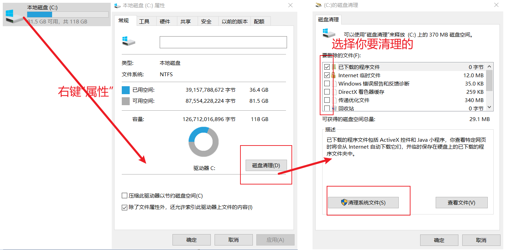
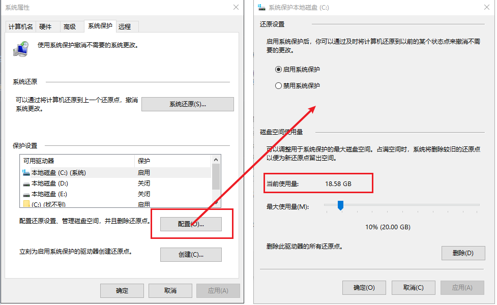

平时在windows环境下工作，在所难免的遇到一些问题，在这里记录一下……
这里记录硬盘空间清理相关的东东
不同的系统的进入方式不同。如果是win10，你可以win键+s键唤醒搜索栏，然后搜索“还原点”

按道理说卸载软件应该是个很简单的事情，但是有时候也会遇到问题，例如：卸载Visual Studio、SQL Server等，一版都会遇到卸载不完全的问题或者弹窗提示各种问题，还有的就是在控制面板找不到对应的程序……
这里说一下两个神器：msicuu.exe和MsiZap.exe。这两款软件够古老的，这里Windows Installer Clean Up - Microsoft Community提到：Windows Installer CleanUp工具已经在2010年停止服务，并建议使用修复阻止程序安装或删除的问题。 我这里也是昨天（2022-02-10）看到了"Windows Installer Clean Up"这个文件夹，并卸载了SQL Server相关的一些软件。别的咱不说了，能用就行了。下面是截图（至于这是哪里下载的，现在也不知道了）：
